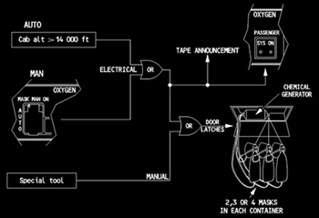

Emergency Oxygen Systems
Cabin Oxygen System
Oxygen is supplied by chemical oxygen generators. The oxygen masks and chemical oxygen generators are located in overhead compartments above each passenger and flight attendant seat and in the lavatories.
All oxygen mask doors open automatically if the cabin altitude exceeds 14,000 feet.
Passenger masks can be manually deployed from the cockpit by pressing the MASK MAN ON pushbutton on the overhead panel for at least 2 seconds. If the pushbutton is not pressed and held for at least 2 seconds, some of the masks may not deploy.
The chemical generators are activated when the oxygen masks are pulled. The mask receives pure oxygen under positive pressure (approximately 13 minutes).
|  |